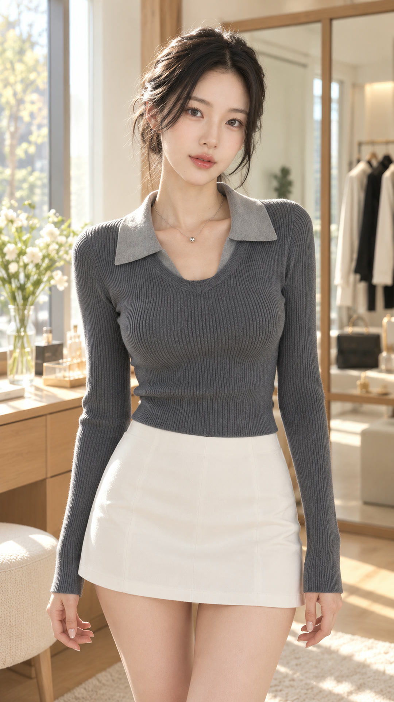
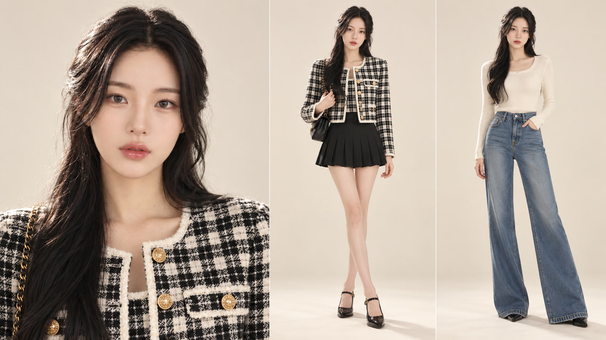
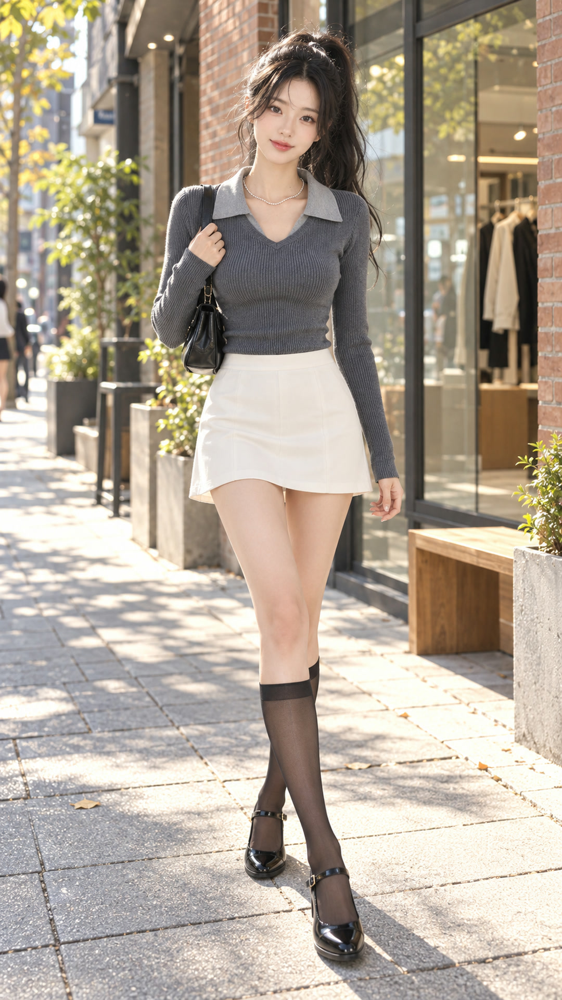
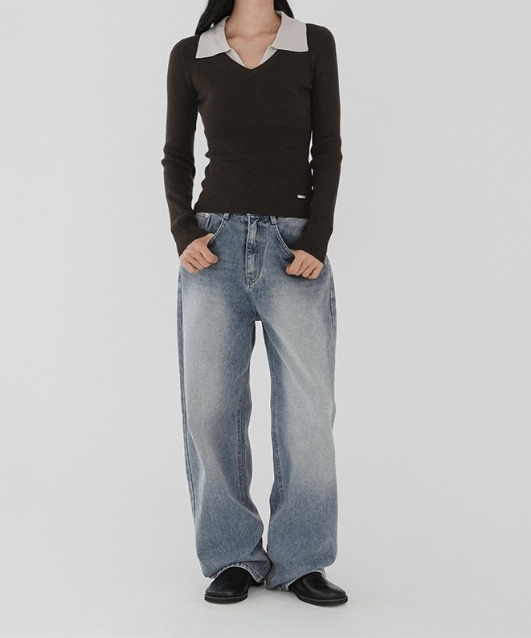
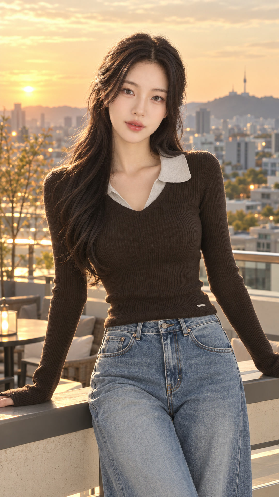

시그니처 뮤즈(GPT #2 · 9등신 v2) 데일리 브이로그 룩북 검수 페이지
① [NEW] 지그재그 오브넬 오픈카라 골지 니트 × 시그니처 뮤즈 일상 브이로그 (5컷 · 5종 의상 맞춤 헤어스타일)
② 지그재그 오브넬 니트 × 스튜디오 화보 버전 (5컷 완료 🟢)
⏳ [NEW] 시그니처 뮤즈(GPT #2 · 9등신 v2) 데일리 브이로그 5컷 — 현재 Google Flow에서 1080p 영상 생성 중 (0/5 완료)
고정 뮤즈(GPT #2)의 얼굴과 9등신 비율을 유지하면서, 컷마다 의상과 오픈카라 넥라인이 가장 돋보이도록 5가지 다른 헤어스타일(집게핀 올림머리 · 청순 생머리 · 하이 포니테일 · 시크 로우번 · 여신 S컬 웨이브)과 일상 브이로그 구도로 새로 제작한 5컷입니다.


Cut V-01. 아침 드레스룸 외출 준비 OOTD 체크 — 집게핀 올림머리 (Claw-Clip Updo)
오픈카라 레이어드 넥라인과 실버 볼 목걸이, 잘록한 허리 골지 핏이 한눈에 보이도록 머리를 집게핀으로 자연스럽게 올려 묶은 아침 외출 준비 브이로그 컷입니다.


Cut V-02. 한남동 채광 카페 창가석 — 귀 뒤로 넘긴 청순 스트레이트 생머리
머리카락이 오픈카라 배색 카라를 가리지 않도록 양쪽 귀 뒤로 깔끔하게 넘긴 청순한 생머리 스타일의 카페 데이트 브이로그 컷입니다.


Cut V-03. 성수동 거리 9등신 전신 워킹 브이로그 — 발랄한 하이 포니테일
경쾌한 하이 포니테일로 목선과 어깨 라인을 시원하게 드러내고, 9등신 모델 비율과 전체 코디 실루엣이 머리부터 발끝까지 선명하게 보이는 성수동 거리 워킹 컷입니다.


Cut V-04. 성수 북카페 9등신 전신 데님 룩 — 시크한 로우번 (Low Bun 묶음머리)
딥 브라운 니트의 오트밀 배색 오픈카라 디테일과 길게 뻗은 와이드 데님 9등신 비율이 완벽하게 보이도록 깔끔한 로우번 헤어로 연출한 전신 브이로그 컷입니다.


Cut V-05. 노을 지는 루프탑 테라스 피날레 — 한쪽 어깨 뒤로 넘긴 여신 S컬 웨이브
우아한 S컬 웨이브 헤어를 어깨 뒤로 넘겨 오픈카라 V넥과 메탈 탭 디테일을 가리지 않고 선명하게 보여주는 노을 루프탑 브이로그 피날레 컷입니다.